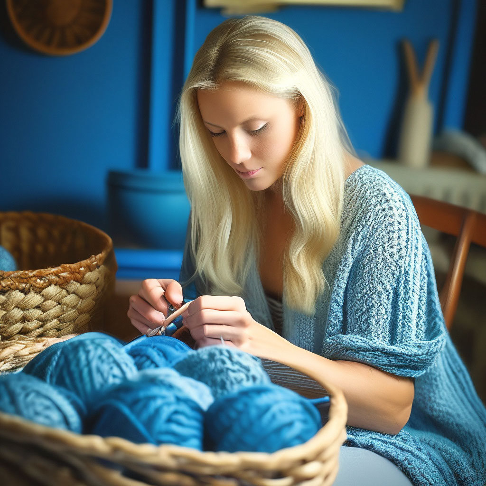
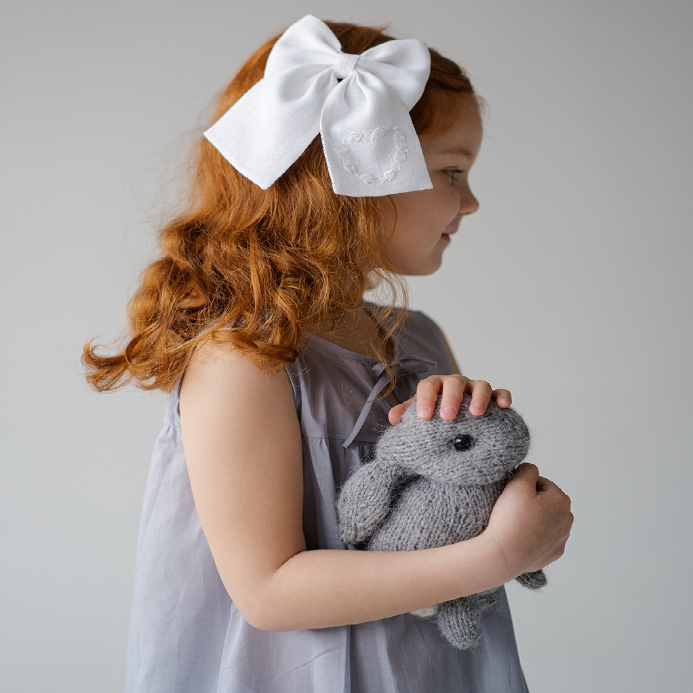
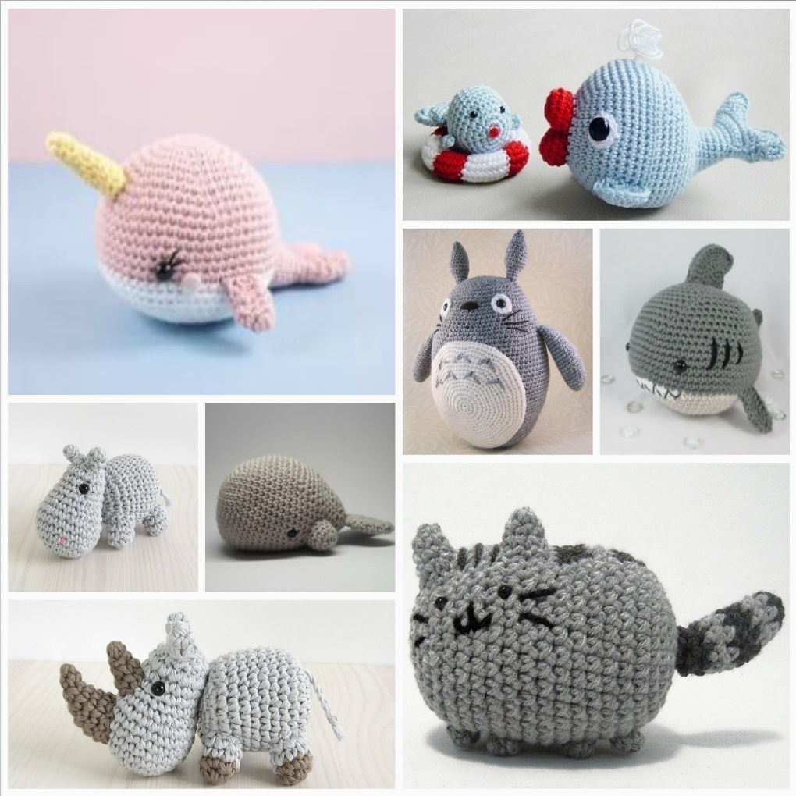
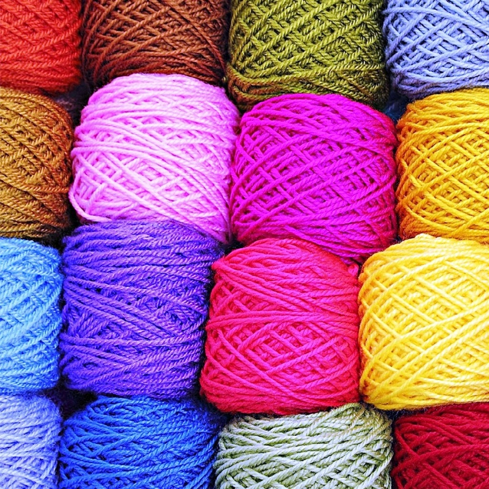
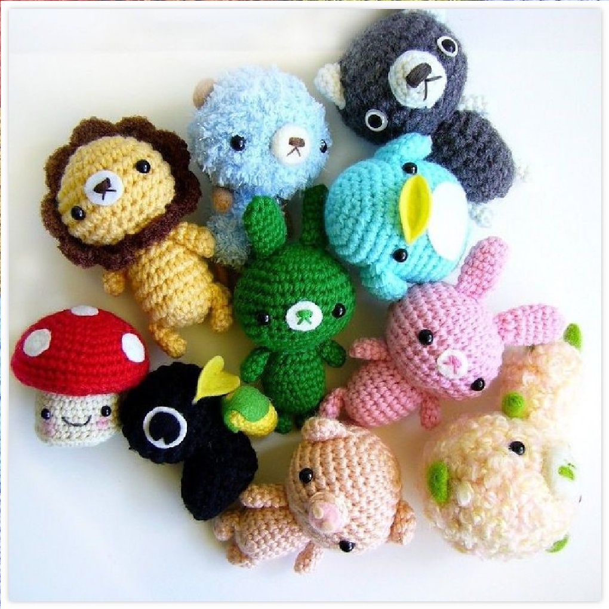
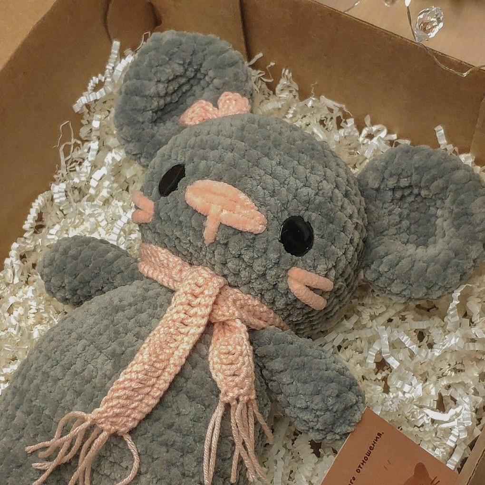
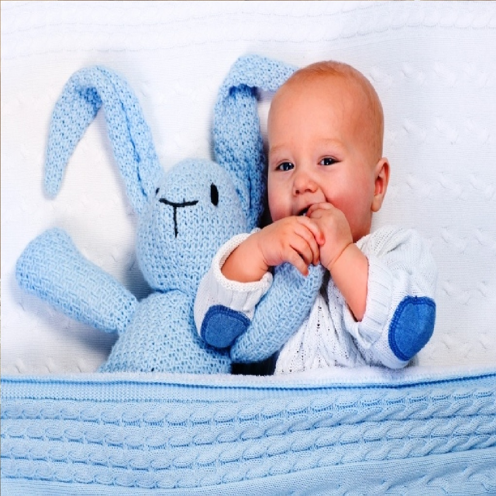

TOYJOY
- это маленький домашний бизнес по изготовлению вязаных игрушек на заказ. Он начался с мечты, а в итоге стал причиной улыбки тысяч детей по всей России. Наша мастерица Саша Канарейка (на фото) готова продолжать идти дальше и дарить улыбки малышам.
За последние 5 лет
это маленькое дело только растет. С каждым годом мы стараемся давать нашим покупателям и их детям лучшее: подбираем материалы, ищем новые схемы и модели, стараемся сделать сервис наиболее комфортным и подходящим именно для вас!
Как мы делаем игрушки?
Мы подходим к процессу создания игрушек с максимальной ответственностью и вниманием к деталям. Сначала мы изучаем все предпочтения покупателя. После этого тщательно подбираем материалы для работы, и, наконец, наша рукодельница превращает пряжу и набивку в кусочек детской радости!
Как мы подбираем материалы?
Конечно же, с расчетом на малышей! В первую очередь важно, чтобы они не вредили здоровью: были гипоаллергенные, окрашенные нетоксичными красителями. Важно, чтоб они были прочными, не выцветали и служили долго. И, конечо же, мягкие, чтобы их приятно было обнимать!
Как мы выбираем модели?
Мы их не выбираем - мы их создаем! Саша сама создает все модели, по которым впоследствие вяжутся игрушки. Зачастую новая игрушка - это огромный вопрос: как подарить малышу максимум радости и комфорта? Но Саша, хорошо знающая детскую психологию, всегда находит самый лучший ответ.
Как доставляете игрушки?
Мы доставляем игрушки Почтой России по всей территории РФ! Вакуумная плотная упаковка гарантирует, что важ зайчик или кошечка не промокнут и не пропитаются неприятными запахами, пока едут к вам. Стоимость доставки уже включена в стоимость готовой игрушки.
А игрушки чистые?
Мы тщательно следим за чистотой наших игрушек, ведь это в первую очередь безопасность вашего малыша. Дети в это время активно познают мир, и мы это понимаем. Поэтому не переживайте, если вдруг вашему маленькому исследователю захочется погрызть нашу игрушку - это абсолютно безопасно!
Расскажите про Сашу!
Саша - самоличный автор всех наших игрушек. Не просто так она носит этот гордый титул. С юношества она любила проводить время с детьми, развлекать и обучать их. В итоге, закончив факультет психологических наук, она работает учителем, но ее отдушиной остается вязание.
И все же, почему именно ToyJoy?
Познание мира
Дети очень активно знакомятся с миром. Наши игрушки могут им в этом помочь: большая часть моделей, представленых в нашем каталоге - это различные животные, которые помогут малышу познакомится с миром зверей, птиц, рыб и других обитателей природы.
Комфорт и спокойствие
Мало кому из мам не знакомы истерики: плач, крики, слезы, валяние в луже посреди улицы. Мягкие игрушки действуют на детей терапевтически, помогая сделать обстановку безопасной и укрыться от сильных эмоций, которые они еще не умеют контролировать.
Для всех
В нашем каталоге уже можно увидеть игрушки для самых маленьких и даже для их мам. В этом году планируется выпуск целых двух коллекций, направлнных на тех, кому больше всего нужно внимание: младенццам и их любимым мамам.
Особенность
Благодаря индвивдуальной работе над каждым заказом, мы можем сделать такую игрушку, которая идеально подоцдет малышу: по цвету, плотности, мягкости. Такая игрушка станет личным компаньоном вашего малыша на долгие годы.